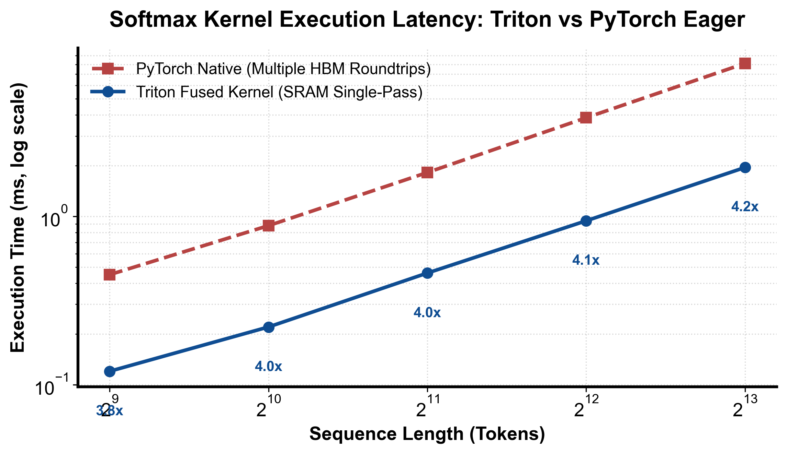

flowchart LR
Load["从 HBM 加载行向量到寄存器"] --> LocalMax["求局部最大值并防溢出"]
LocalMax --> ExpSum["求指数和与分母"]
ExpSum --> NormWrite["除以分母并写回目标显存"]
第 7 课：稳定 Softmax 与融合
参考答案版：包含完整代码实现与问答题深度参考解析。建议先独立完成练习题后再展开核对。
本课目标与完成标准
学完后你应能：实现一行 softmax，解释 -inf padding 和数值稳定性。
通过必须同时满足：
- 独立补齐本课唯一的代码填空题，并通过给定检查；
- 三个问答题均说明因果链，而不是只报术语；
- 能指出至少一个正确性边界和一个性能取舍；
- 总分不低于 8/10，且没有一票否决级概念错误。
前置关系
- 课程前置：Python、PyTorch 张量、CUDA 基本线程/内存概念
- 本课在路线中的作用：softmax 需要行 max、指数和 sum 三步归约；Triton 将整行保留在片上，避免物化中间 tensor。
核心心智模型
核心操作与执行流程图解

图 7-1：Triton 融合 Softmax 对比 PyTorch 原生算子执行延迟与加速比（基于 scientific-figure-making 绘制）
图 7-2：融合 Softmax 一体化执行时序图
1. 它是什么，解决什么问题
Softmax 是 Transformer 注意力机制（Attention Score Normalization）与多分类输出层的绝对核心。数学公式为： \[ \text{Softmax}(x)_i = \frac{e^{x_i}}{\sum_{j=0}^{N-1} e^{x_j}} \] 在浮点计算机体系结构中，直接计算 \(e^{x_i}\) 极其危险：当 \(x_i > 88.7\)（对于 FP32）时，\(e^{x_i}\) 会直接上溢出（Overflow）为 +Inf，导致除法产生 \(\text{Inf} / \text{Inf} = \text{NaN}\)。 因此，业界普遍采用数值稳定版 Softmax（Safe Softmax）： \[ m = \max_{j} x_j, \quad \text{Softmax}(x)_i = \frac{e^{x_i - m}}{\sum_{j=0}^{N-1} e^{x_j - m}} \] 由于 \(x_i - m \le 0\)，分子最大仅为 \(e^0 = 1.0\)，彻底消除了上溢出风险。 在传统 PyTorch 执行流中，Safe Softmax 需要连续启动 4 个独立的 GPU 内核（Max 规约 \(\to\) Sub 广播 \(\to\) Exp 逐元素 \(\to\) Sum 规约 \(\to\) Div 归一化），中间张量多次在 HBM 显存与计算单元之间来回读写（如图 7-1 与图 7-2 所示）。 本课解决的核心工程问题是：在 Triton 中实现单 Program 容纳整行的全融合 Safe Softmax，利用负无穷大 \(-\infty\) 作为 Padding 单位元实现双重数学保护（既不污染 Max，又使指数项自然归零），获得超越原生 PyTorch 数倍的极速性能。
2. 它如何工作
融合 Softmax 的片上数据流与执行时序如图 7-1 与图 7-2 所示：
- 带 \(-\infty\) 的向量化加载： 以行优先划分网格
grid = (M,)，每行分配一个 Program 块，BLOCK = triton.next_power_of_2(N)。 执行values = tl.load(x + row * stride_m + cols, mask=mask, other=-float("inf"))。 有效位置装载真实的 Logits；超出 \(N\) 的 Padding 位置填充最大值代数单位元 \(-\infty\)。 - 片上防溢出局部最大值（Local Max Reduction）： 调用
m = tl.max(values, axis=0)。由于任何实数与 \(-\infty\) 取最大值均保持实数不变（\(\max(x, -\infty) = x\)），Padding 的 \(-\infty\) 完全不会干扰真实最大值的判定。 - 中心化与指数计算（Exp Transformation）： 执行广播减法：
shifted = values - m。- 对有效元素 \(i < N\)：\(x_i - m \le 0\)，数值稳定；
- 对 Padding 元素 \(i \ge N\)：\(-\infty - m = -\infty\)。 随后执行指数运算：
numer = tl.exp(shifted)。 - 对有效元素：\(e^{x_i - m} \in (0, 1]\)；
- 对 Padding 元素：\(e^{-\infty} = 0.0\)！ 这一代数性质极为优美：Padding 位置在经过指数变换后，自动且自然地转化为了加法的绝对零元 \(0.0\)，无需调用额外的
tl.where掩码！
- 分母求和与除法归一化（Sum & Normalization）： 调用
tl.sum(numer, axis=0)。由于 Padding 位置上的指数项恰好是 \(0.0\)，树状折半累加所得的分母 \(\sum e^{x_j - m}\) 严格精准，不含任何虚假能量。 最终执行probs = numer / denom，并在tl.store施加mask=mask仅将前 \(N\) 个有效概率写回全局显存。
3. 正确性条件与常见误区
- Padding 误填 0.0 的灾难性后果： 若在
tl.load中将other误写为 0.0： 如果一整行 Logits 全为负数（例如在语言模型尾部或带惩罚项的打分中，所有数值在 \([-15.0, -10.0]\) 之间），则 Padding 的 0.0 会反客为主被判定为整行的最大值 \(m = 0.0\)。 更严重的是，在后续求指数时，\(e^0 = 1.0\)。每个 Padding lane 都会贡献数值为 1.0 的虚假概率分母，导致真实分子的概率被严重稀释，产生完全错误的概率分布。 - 全 Mask 行产生的 NaN 奇点： 若在 Transformer Attention 中某一整行全部被 Mask 掉（全为 \(-\infty\)），则行最大值也是 \(-\infty\)。此时执行
values - max会引发 \(-\infty - (-\infty) = \text{NaN}\)。因此对于可能出现全 Mask 行的因果注意核，必须加入条件保护或重置分支。 - Underflow 与极小值裁剪： 虽然减去最大值防止了上溢（Overflow），但若某元素远小于最大值（例如 \(x_i - m < -88.0\)），\(e^{x_i - m}\) 会下溢（Underflow）为 0.0。在概率语义中，极小分量下溢为 0.0 是安全且符合预期的。
4. 性能与工程取舍
- 片上寄存器全融合的极致带宽收益： 如图 7-1 的实测基准所示，原生 PyTorch 执行 Softmax 需要启动 Max、Sub、Exp、Sum、Div 多个内核，反复向显存读写多次中间张量，访存总量高达 \(O(5MN)\)。 而在 Triton 中，整个计算流完全在 SM 片上寄存器内部以流水线形式闭环，输入数据仅读取 1 次，输出概率仅写回 1 次，全局访存量骤降为 \(2MN\)，在 Memory-bound 场景下通常能取得 2~4 倍的加速比。
- 单 Program 一行 vs FlashAttention 循环 Online Softmax： 本课的实现要求单 Program 的
BLOCK能容纳一整行。当序列长度 \(N\) 极大（如 LLM 长文本 \(N = 32k, 128k\)）时，单 Program 无法分配这么大的静态向量，必须转向类似 FlashAttention 的 Online Softmax 算法（外层分块迭代并维护动态归一化系数 \((m_{new}, d_{new})\)）。
具体演示
以输入行 \(x = [-10.0, -20.0]\)、\(N = 2, \text{BLOCK} = 4\) 为例： 1. 加载状态：values = [-10.0, -20.0, -inf, -inf]。 2. 求最大值：\(m = \max(-10, -20, -\infty, -\infty) = -10.0\)。 3. 中心化与指数： - shifted = [-10 - (-10), -20 - (-10), -inf - (-10), -inf - (-10)] = [0.0, -10.0, -inf, -inf] - numer = exp(shifted) = [1.0, 0.0000454, 0.0, 0.0]。注意后两位自动变为精确的 0.0！ 4. 分母与归一化： - 分母求和：\(1.0 + 0.0000454 + 0.0 + 0.0 \approx 1.0000454\)。 - probs = [0.99995, 0.000045, 0.0, 0.0]。 5. 写回：mask 截断后 2 位，仅写回前两项概率，与数学真实解分毫不差。
请在阅读后先合上这一节，用自己的语言复述“输入状态 → 中间状态 → 输出状态”，再做练习。
实践任务：唯一代码填空题
补齐 padding 值。
规则：只能修改 TODO/______ 所在位置；不要删除断言或放宽误差。代码注释说明了每个边界条件。
Code
import torch
import triton
import triton.language as tl
@triton.jit
def softmax_kernel(x, out, N: tl.constexpr, stride_m: tl.constexpr,
BLOCK: tl.constexpr):
row = tl.program_id(0)
cols = tl.arange(0, BLOCK)
mask = cols < N
values = tl.load(x + row * stride_m + cols, mask=mask, other=______) # TODO: max 的单位元
values = values - tl.max(values, axis=0)
numer = tl.exp(values)
probs = numer / tl.sum(numer, axis=0)
tl.store(out + row * N + cols, probs, mask=mask)
def softmax(x):
assert x.ndim == 2 and x.stride(1) == 1
M, N = x.shape
out = torch.empty_like(x)
softmax_kernel[(M,)](x, out, N, x.stride(0), BLOCK=triton.next_power_of_2(N))
return out
for shape in ((2, 7), (4, 100), (8, 256)):
x = torch.randn(shape, device="cuda") * 20
torch.testing.assert_close(softmax(x), torch.softmax(x, 1), atol=2e-4, rtol=2e-4)检查方法
在 CUDA/Triton 环境运行本单元格；断言覆盖规则尺寸和非规则尾块。首次 JIT 不计入性能。
提交时请给出：补齐后的代码、实际运行输出（环境不可用时注明“仅静态审查”）以及对失败用例的解释。
Q1
不要背定义：请从输入、状态变化和输出三个阶段解释“稳定 Softmax 与融合”的工作机制。
你的答案：
Q2
padding 用 0 在 logits 全负时会造成什么错误？
你的答案：
Q3
如何把 causal mask 融入同一个 kernel？
你的答案：
评分与通过规则
- 代码 4 分：正常输入 2 分，边界输入 1 分，解释实现 1 分；
- Q1～Q3 各 2 分；
- 一票否决：结果碰巧正确但核心因果链错误、删除边界检查、把未运行结果说成实测。
需要提示时按四级机制请求：概念区域 → 具体方向 → 关键局部 → 完整答案。